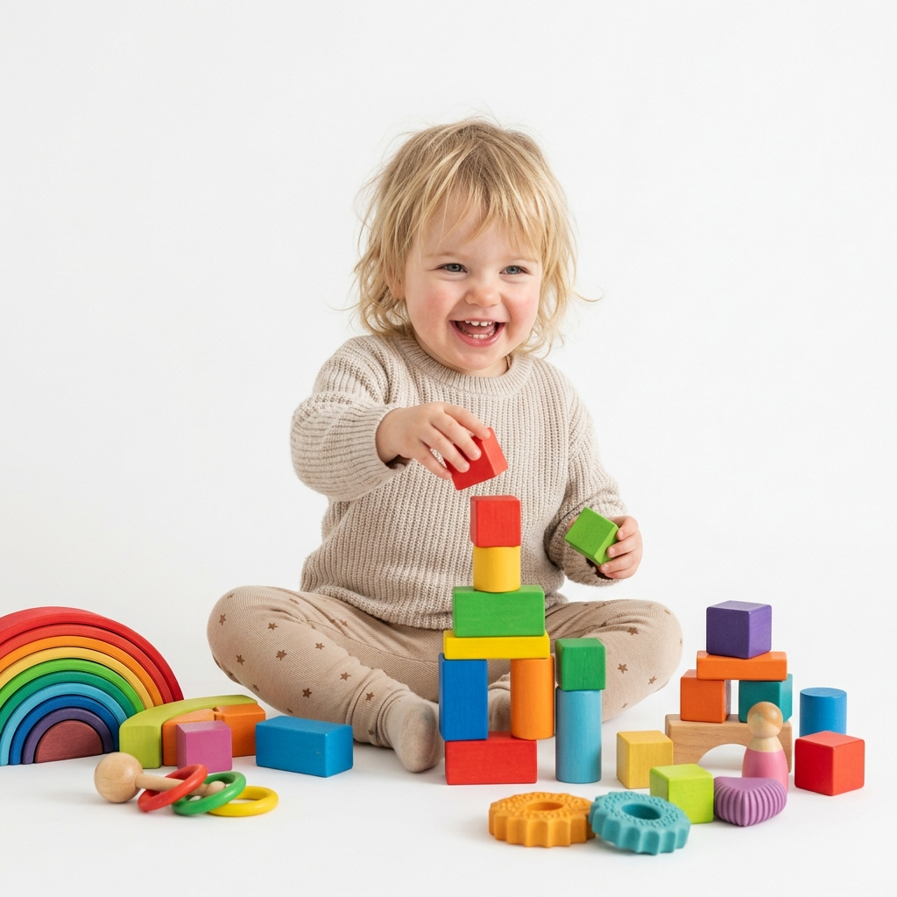

0 – 2 yrs
0 – 2 yrs
The Cocoon
Foam-padded floor, mirror panels, cause-and-effect tactile walls, and a quiet nursing nook. Sock-only, shoes off at the door.
Our curated collection of indoor play zones and sensory explorations has been carefully designed to inspire young minds, nurture creativity, and foster the spirit of joyful play.

Every room and activity is tuned to childhood developmental windows — giving children the freedom to test boundaries in a safe, sensory-rich environment.
Tactile bins, non-toxic liquid tile floors, cause-and-effect walls, and daily guided craft projects that ignite imagination.
Foam climbing tunnels, soft balance logs, mini trampolines, and gross-motor challenges built for physical confidence.
Dedicated shoe-free crawler zones with mirror panels, grasping textures, and quiet nursing nooks for babies 0–2 years.
Interactive light tables, giant magnetic gear walls, and kid-friendly robotic challenges for growing preschoolers and tweens.
Kids stay within developmentally matched play environments. Siblings are always welcome to hop rooms together.
0 – 2 yrs
Foam-padded floor, mirror panels, cause-and-effect tactile walls, and a quiet nursing nook. Sock-only, shoes off at the door.
 2 – 4 yrs
2 – 4 yrs
Low climbers, sensory rice bins, a ball bath, and a hand-painted wooden city. Soft sounds, natural lighting, and zero flashing screens.
 4 – 8 yrs
4 – 8 yrs
Two-tier timber climbing structure with slide, rope bridge, giant blue foam blocks, and an air-tube ball cannon.
 8 – 12 yrs
8 – 12 yrs
Rotating maker tables with clay, watercolor, light tables, collaborative murals, and parent-child workshops on weekends.
"The cleanest and most thoughtful play space in Brooklyn. My 3-year-old loved the sensory bins, and I loved the comfortable parent seating and great coffee."
"As a pediatric therapist, I can see the developmental science in every room. Safe, creative, and staff-to-child ratios that actually keep kids safe."
"We celebrated my son's 5th birthday here. The party team took care of literally everything from setup to sensory crafts. Stress-free and magical."
Book an open play session or schedule a guided studio tour. New family passes include a complimentary sensory zone orientation.